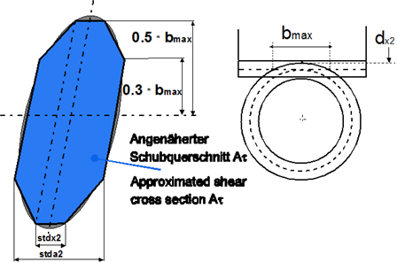

|
|
|


剪切静力计算
确定蜗轮作为斜齿圆柱齿轮受到剪切的作用方式：
τF = Ft2*KA*YE/Aτ
Aτ = bmax/5*(4*stda2-stdx2)
dx2 = 2* a-da1
此计算自动执行，并在报告中的 齿根承载能力 或 齿轮齿根静力剪切 条目下记录。

图19.3：剪切横截面的尺寸。
English Original
Static calculation on shearing
Determining how the worm wheel is subjected to shearing as a helical gear:
τF = Ft2*KA*YE/Aτ
Aτ = bmax/5*(4*stda2-stdx2)
dx2 = 2* a-da1
This calculation is performed automatically and is documented in the report under Tooth root load capacity or Static shearing in tooth root of the gear.
Figure 19.3: Dimensions of the shear cross section.